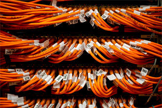

Introdução
As organizações implementavam suas redes de computadores apenas com a necessidade primária de prover conectividade entre os computadores para que com isso conseguissem a agilidade nos seus processos de negócios.
Desta forma, naquele momento, a preocupação com a segurança não tinha muita importância, uma vez que a principal intenção era deixar a infraestrutura funcionando para a realização dos negócios.
Com o passar dos anos, quando o crime físico migrou para o mundo virtual, onde hackers, funcionários insatisfeitos e espiões industriais começaram a atacar os ambientes corporativos através de suas redes de computadores, essa realidade transformou-se.
Quando os primeiros problemas de segurança começaram a ocorrer e a organização viu seu ambiente de negócio comprometido, devido a impossibilidade de realizar algumas de suas operações e tendo altos prejuízos financeiros, passou-se a encarar o problema de outra forma.
Segurança física
Os objetivos da segurança física estão relacionados às ações que visem à prevenção de acesso não autorizado de pessoas a lugares dentro da organização, bem como a prevenção a danos ou interferências nos equipamentos de Tecnologia da Informação que possam comprometer os processos de negócios das empresas.
A segurança física deve ser pensada em primeiro lugar, uma vez que ela virá antes dos processos que cuidarão da segurança lógica como, por exemplo: instalação e configuração dos firewalls, antivírus, criptografia e outras ferramentas de segurança "lógica" que visam proteger o ativo que estará instalado em algum "lugar" dentro da empresa. Desta forma, esse "lugar" deve estar preparado para receber um equipamento e mantê-lo longe dos perigos.
A segurança física deve fazer parte da vida de todos os funcionários e colaboradores da organização, bem como terceiros ou outras pessoas que, por algum motivo, estejam autorizadas a acessar os ambientes de Tecnologia da Informação dento da empresa.
A segurança física pode ser implementada através de perímetros de proteção, que ajudarão os profissionais de segurança a aplicar os controles de acordo com o grau de criticidade do ambiente. A ideia é que os controles sejam aplicados em lugares que realmente eles se façam necessários, como uma maneira de diminuir os gastos desnecessários com a segurança.
Um exemplo deste cenário será retratado a seguir:
Uma empresa que possui os seus principais ativos de informação guardados dentro de um servidor de arquivo. Somente poderia ter acesso físico a esse equipamento, os Administradores da Rede. Desta forma, antes de chegar à sala onde este equipamento ficará alocado, esses profissionais passarão pela primeira barreira de segurança física que será portaria principal da empresa, onde o acesso é permitido para um número elevado de pessoas e tem controles básicos de segurança, como, por exemplo, a identificação através de algum documento.
Depois de ultrapassar o primeiro controle de acesso, o funcionário atravessará um segundo nível de segurança, que somente possibilita o acesso aos funcionários da empresa, pois se tratava de áreas classificadas como locais de acesso restrito. Podemos entender como áreas de acesso restrito, as áreas onde o acesso é permitido somente para funcionários e colaboradores que necessitam ficar neste local para a realização da sua atividade profissional. O acesso será permitido mediante a apresentação de um crachá funcional ou uma senha.
No próximo nível, a pessoa terá que atravessar outro lugar onde existe um call Center, local onde o acesso é dado apenas aos funcionários deste setor, através da utilização de outros tipos de controles como, por exemplo, Smart Card, Token de senha, entre outros. No seu destino final o funcionário terá acesso ao Data Center, local onde estariam os servidores. Para ter acesso a esse local, classificado pela política de segurança da Empresa sendo como área Restrita e Exclusiva, o funcionário terá que ser identificado por meio de algum dispositivo biométrico. Passando por este nível, para ter acesso ao local onde estaria o servidor, primeiramente ele teria que entrar acompanhado por um funcionário responsável pela guarda deste local e que, certamente, possui a identificação biométrica para entrar na sala do cofre. Neste local, o servidor em questão estará dentro de racks trancados e protegidos contra acesso físico indevido.
Neste local, devido à necessidade de proteção do ambiente, toda a infraestrutura, a energia, a climatização, a iluminação, o cabeamento estariam duplicados para ter uma contingência adequada.
Com este pequeno exemplo, verificou-se uma série de controles que devem ser aplicados de acordo com o nível de proteção que cada ambiente necessita.
No nosso estudo focaremos a segurança física relacionadas às áreas onde estão os equipamentos de tecnologia da informação, que sustentam os processos de negócios e que foram anteriormente identificados pelas atividades de analise de risco.
Os perímetros de segurança física devem ser sólidos, para que não haja brechas ou pontos de falhas que possibilitem facilmente uma invasão ou acesso indevido.
Elementos a serem observados com relação à segurança física:
Localização física
O local onde estão os equipamentos de tecnologia de informação devem ser implementados em uma área que esteja livre de fatores de riscos físicos como, por exemplo, depósito de materiais combustíveis, proximidade de antenas de TV, tubulações de água e esgoto ou outros tipos de líquidos inflamáveis.
A exposição dos ativos de TI pode representar, para um possível "agressor", uma fonte de informação que ele poderá utilizar para um posterior ataque. Um exemplo disso pode ser a facilidade de um agressor identificar o tipo de equipamento que está instalado dentro da empresa e é responsável por fornecer o acesso a rede sem fio da empresa. Com base nesta informação poderá ir em busca de ferramentas que visem a explorar as vulnerabilidades nativas deste dispositivo.
Segurança ambiental
A segurança ambiental tem por objetivo adotar medidas que evitem risco às instalações e equipamentos por ocorrência de fatores como, por exemplo, incêndios fumaça; Poeira, vibrações, umidade, inundação;
Desta forma é recomendado que sejam implementados sensores que possam controlar esses elementos de forma integrada. Também é recomendável que seja implementado um sistema que permita a monitoração de forma remota de todos esses elementos e se possível com disparo de alarme e alerta para os administradores da Rede.
Cabeamento

Todo o sistema de cabeamento de rede deve ser protegido quanto a sua interrupção/interceptação que pode ocorrer de forma indevida. Em razão disso os cabos de redes devem ser alocados em locais protegidos fisicamente deste tipo de acesso, bem como se for possível o cabeamento deve ser feito de forma subterrânea com a intenção de impedir que as pessoas saibam por onde ele está passando. Caso isso não seja possível pode-se pensar em passá-lo por cima dos forros e tetos, tornando protegidos contra aquecimento e umidade.
Como item básico em segurança do cabeamento, é importante que ele seja estruturado. A importância está relacionada à norma que faz exigências que o cabeamento fique distante dos cabos elétricos (energia) para evitar a ocorrência de interferência eletromagnética na transmissão dos dados.
Devem ser implementados controles que ajudem na identificação de possíveis interceptações não autorizadas aos cabos da rede, por parte de um agressor que poderia colocar, de forma secreta, alguns grampos para coletar informações.
Para verificar se as medidas de segurança recomendadas estão sendo efetivas é recomendável que seja feita inspeção física periódica no local onde estiverem alocados estes equipamentos.
Também deve ser pensado em organizar e separar os cabos de redes por cores, bem como etiquetar os respectivos pontos de acesso e réguas de dados e energia como forma de facilitar o processo de identificação dos equipamentos para uma futura manutenção. Ter o desenho da topologia da rede, com as respectivas características dos edifícios e dos equipamentos que estão conectados também ajudará neste momento.
Proteção ao incêndio
O fogo é uma reação química formada por três elementos: Comburente + Material Combustível + Fonte de Calor. Ao eliminarmos qualquer um dos elementos, não haverá formação do fogo. Como recomendação de segurança, é aconselhável que seja feita uma vistoria junto às áreas que suportam os recursos de tecnologia da informação em busca de situações em que estes três elementos estejam juntos e possam representar uma ameaça para o ambiente. Não devemos esquecer que essa análise não deve ser feita apenas na nossa organização, pois algum prédio vizinho poderá ter esse nível de concentração de elementos e poderá colocar em risco a nossa empresa.
Antes de corrigimos um problema é necessário tentar evitá-lo, por isso a existência de dispositivos de detecção e prevenção de incêndio é importante para reduzir o nível de risco que a organização estará exposta.
Caso o incêndio não possa ser evitado, ele deverá ser combatido e para isso é necessário que o sistema ideal de combate ao incêndio seja aplicado.
Hoje em dia, os sistemas utilizados para combater incêndio em ambiente de TI são os gases CO2, Gás Inergem, Gás FM200, que combatem o fogo de forma eficaz e são apropriados para agir junto aos equipamentos eletrônicos.
Segurança física - água
A água é uma grande vilã contra os equipamentos de tecnologia da informação, pois pode causar curto circuito quando combinado à energia elétrica. Desta forma, é importante que seja observado no ambiente onde estão os equipamentos de TI, bem como a existência de aberturas na laje dos edifícios que podem pode ser um caminho para uma verdadeira inundação do andar situado logo abaixo.
Também devem ser observadas as condições do subsolo e das tubulações que passam junto ao ambiente de TI de forma a evitar futuras surpresas com infiltrações e alagamentos.
Energia elétrica
Sem a energia elétrica os equipamentos de TI não funcionam e, desta forma, esses equipamentos devem estar protegidos contra possíveis falhas de alimentação elétrica.
Uma das recomendações básicas é a utilização de equipamentos que mantenham a energia estabilizada, livre de sujeiras e ruídos, além de manter a rede elétrica energizada com estabilizadores, filtro de linha e no breaks.
O uso de um grupo gerador poderá ser pensado para ser aplicado em lugares que são classificados como sendo de extrema importância para a infraestrutura e que contenham equipamentos estratégicos para a distribuição da rede.
É importante que as salas dos servidores e equipamento de comunicação recebam alimentação de circuitos totalmente independentes, ou seja, diferentes dos circuitos que alimentam as outras áreas da organização.
É importante que a rede elétrica, que está ligada aos equipamentos, esteja aterrada. pois terá como função proteger o usuário das descargas atmosféricas, bem como descarregar cargas estáticas acumuladas nas carcaças das máquinas ou equipamentos e facilitar o funcionamento dos dispositivos de proteção como fusíveis, disjuntores.
Climatização
Os locais onde estão localizados os servidores corporativos são totalmente dependentes das instalações de climatização, devido à necessidade de resfriamento do ambiente, uma vez que os equipamentos facilmente podem atingir elevados níveis de temperatura.
Um sistema de condicionamento de ar destina-se a manter um ambiente isento de impurezas, bem como possibilita deixar o clima em condições ideais e estáveis para o processamento de dados. Desta forma é importante que seja observado para este equipamento alguns cuidados específicos, como os citados a seguir:
- Exclusividade do Sistema, pois caso o equipamento seja compartilhado com outras áreas poderá representar um problema na sua administração e utilização;
- O correto dimensionamento do equipamento também deve ser visto, uma vez que se for superdimensionado não exercerá a correta função para a qual foi adquirido;
- Devido a possibilidade de uma falha, deve ser sempre pensado na redundância de equipamento, pois na falha de um sistema outro deverá entrar para manter o ambiente na condição anterior;
- Não basta apenas colocar o equipamento e não se ter a ideia se ele está agindo de forma eficiente ou não, desta forma é importante que estes equipamento possuam controle e registro de temperatura e umidade;
Piso elevado
O piso elevado é um sistema de placas modulares removíveis, montada sobre uma estrutura. Com isso, cria-se um vão livre no entre piso, para acomodar instalações elétricas, lógica, dutos de ar condicionado, fios, cabos telefônicos, etc.
A maior parte dos ambientes de tecnologia utiliza este tipo de estrutura devido ao suporte dos equipamentos pesados, sem a possibilidade que existam no ambiente vibrações que possam comprometer os dados armazenados nos servidores.
Segurança física dos equipamentos
A segurança dos equipamentos está diretamente relacionada aos procedimentos de instalação e proteção e devem seguir os procedimentos recomendados pelos fabricantes, bem como suas normas. Os equipamentos devem ser instalados de modo a permitir fácil acesso à equipe de manutenção, além da instalação garantir uma boa ventilação aos componentes.
Os equipamentos que são deixados para acesso ao público devem estar presos por dispositivos de alarme e de preferência que também tenham algum componente antifurto como, por exemplo, cabos e travas. Também devem fazer uso de outras proteções físicas, como armário, gaiola, trava mecânica e/ou eletrônica, ou qualquer outro dispositivo que permita impedir o acesso de pessoas não autorizadas.